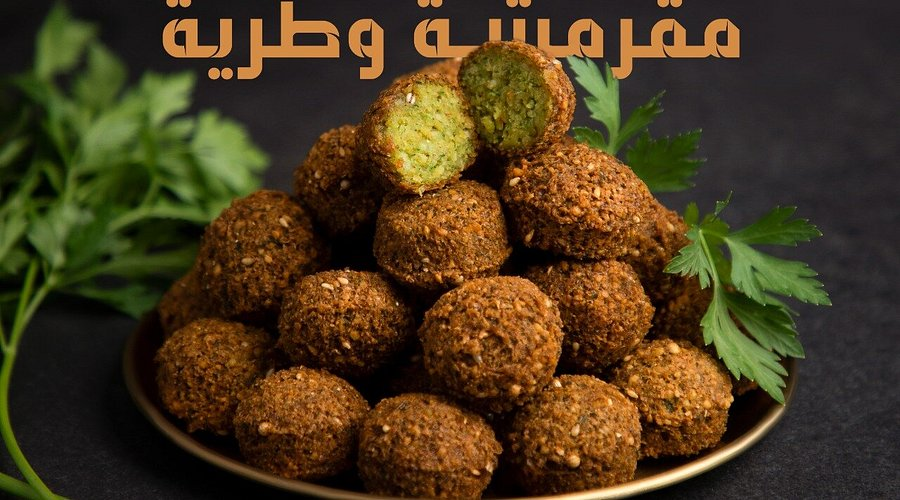
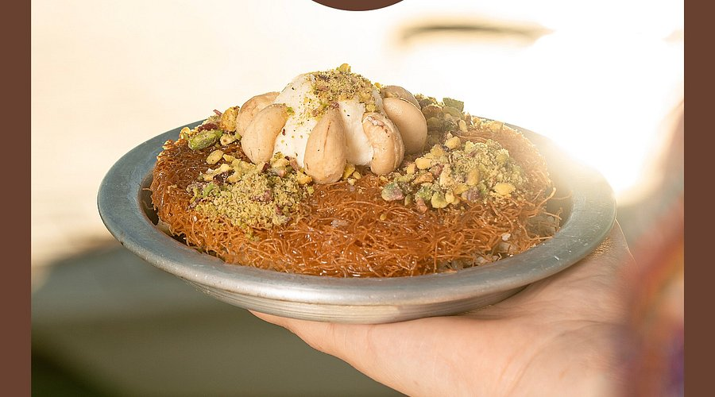
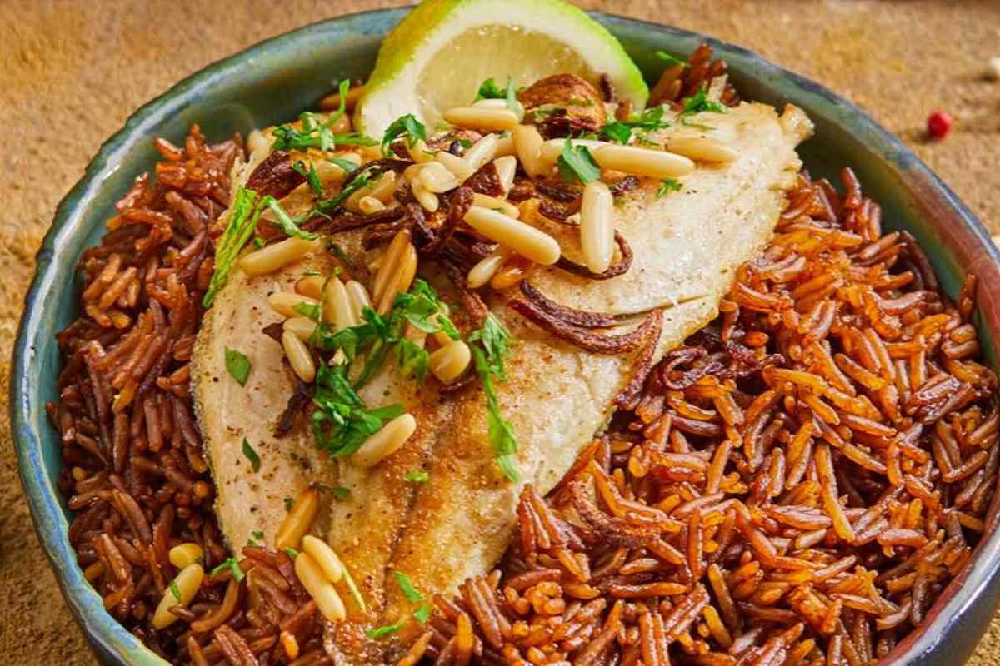
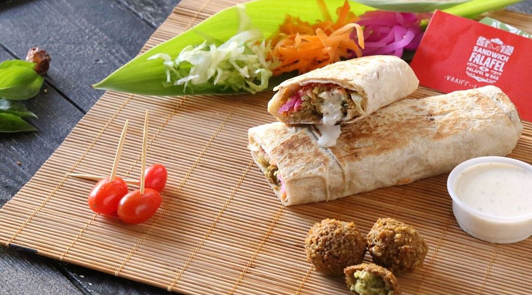
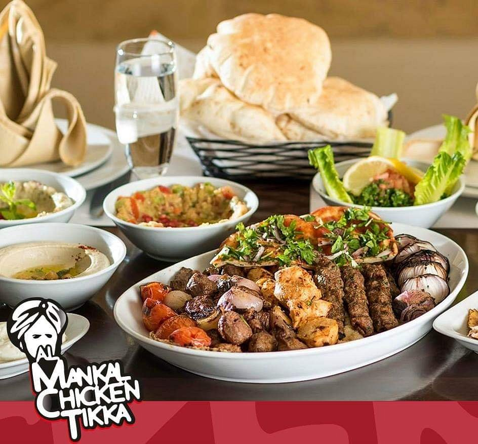
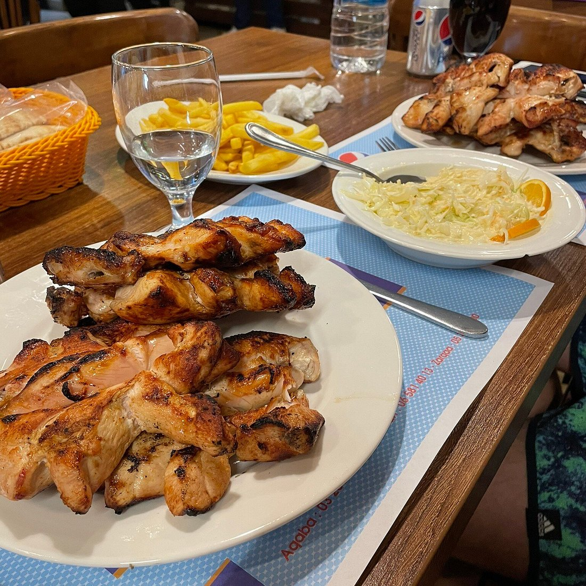
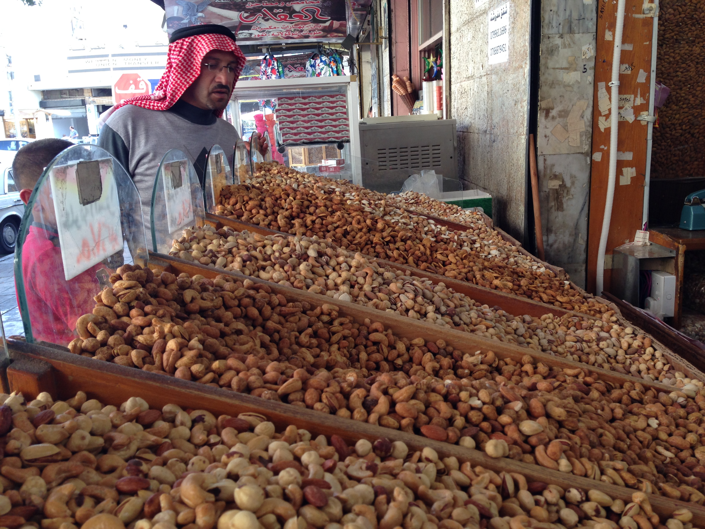

Aqaba is not just a coastal retreat; it's a culinary destination waiting to be explored. To truly experience the city, you must eat like a local. From hidden falafel gems to the finest sweets, here is your ultimate guide to the best food in Aqaba.
1. The Perfect Falafel: Falafel w Bas
For the most authentic falafel sandwich in town, head straight to Falafel w Bas. Their falafel is always fresh, crispy on the outside, and fluffy on the inside. It's a local favorite for a quick, delicious, and affordable meal.
Find Falafel w Bas on Google Maps
2. Sweet Perfection: Kenafeh at Anabtawi Sweets
No visit to Jordan is complete without Kenafeh, and Anabtawi Sweets serves some of the best in Aqaba. The warm cheese, crunchy pastry, and sweet syrup create a heavenly combination that you simply must try.
Find Anabtawi Sweets on Google Maps
3. Fresh from the Sea: Sayadieh at the Local Fish Market
Aqaba's Local Fish Market is the place to go for the freshest seafood. Try the traditional Sayadieh (fish with spiced rice). Pro tip: Look for Tuna fish during the winter season, often served with tahini, or enjoy Swordfish during the summer months.
Find the Local Fish Market on Google Maps
4. Authentic Appetizers: Mutbel at Hashim Restaurant
For the best Mutbel (roasted eggplant dip), Hashim Restaurant is a must-visit. Their traditional recipes have been perfected over generations, offering a true taste of Jordanian hospitality.
Find Hashim Restaurant on Google Maps
5. Grilled to Perfection: Barbecue at Alshami Restaurant
If you're craving grilled meats, Alshami Restaurant is the place for Barbecue. Their kebabs and grilled platters are seasoned to perfection and served in a welcoming local atmosphere.
Find Alshami Restaurant on Google Maps
6. More Than Just Chicken: Teka Chicken
Teka Chicken is famous for its grilled chicken, but don't miss their special Lentil Soup and Fattoush Salad. It's a great spot for a healthy and satisfying meal.
Find Teka Chicken on Google Maps
7. The National Dish: Mansafna for Mansaf
You can't leave Jordan without trying Mansaf, the national dish. Mansafna specializes in this lamb and fermented yogurt (jameed) delicacy, served over rice and thin bread.

8. A Local Legend: Al-Haseeb Roastery (Alhsaab)
Started right here in Aqaba, Al-Haseeb (often called Alhsaab by locals) is a popular nut shop famous across the Middle East. It's the perfect place to pick up some roasted nuts or local coffee as a souvenir.
9. Refreshing Finish: Watermelon Juice
After a day of exploring, nothing beats a fresh Watermelon Juice. You'll find it at many local juice stalls throughout the city—the perfect way to cool down in the Aqaba sun.